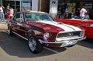
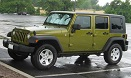

This Chevy is alot like the one my father owns and we are fixing up.
This Ford Mustang looks very nice and I have always loved old Mustangs.
This Ford Mustang convertible is very similar to a freinds fathers mustange which I envy.
I have always liked the look of the Lamborghini Aventador against all the other sports cars on the market.
Jeeps have long been ideal cars for me due to the durrablility of them and how well the work.